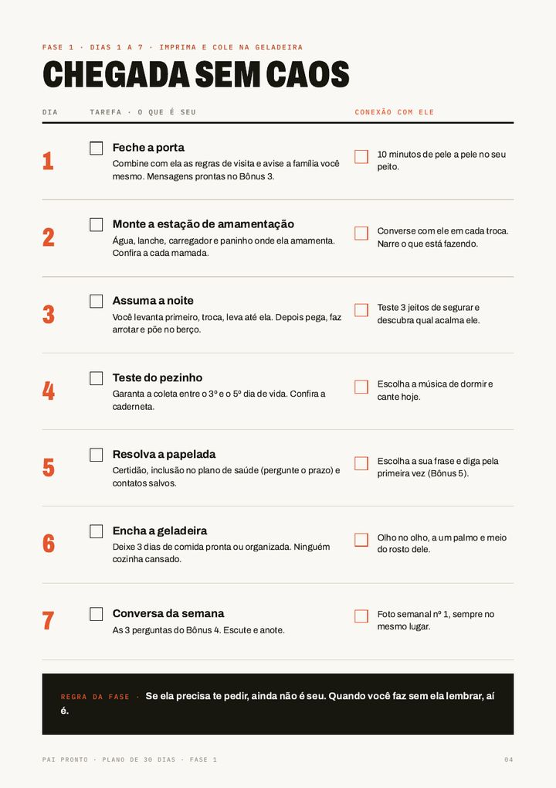

Os erros de todo pai de primeira viagem
Você quer fazer certo. Só que ninguém te mostrou como.
Perguntar "quer ajuda?" pra sua mulher no pós-parto.
Ela não precisa de ajuda. Precisa que você já saiba o que é seu: a noite, a comida, a casa, as visitas.
Encher a casa de visita na primeira semana.
É quando ela mais precisa descansar. Quem fecha a porta é você, com carinho e sem criar climão com a família.
Passar a madrugada no Google sem saber se é normal.
Você precisa saber quando ligar pro pediatra e quando ir direto, numa página só.
Esperar ele crescer pra criar vínculo.
O vínculo do pai começa na primeira semana. 10 minutos por dia, do jeito certo.
“
O Pai Pronto é o que eu queria ter recebido antes da primeira noite em casa: sem teoria, sem sermão, só o que funciona.
Bruno Burke · pai do José Inácio e da Maria Cecília
Como funciona
30 dias, 4 fases. Cada fase termina com um resultado.
Você não lê um livro. Você faz uma tarefa por dia e marca no checklist.
O que passa na sua cabeça
"Não sei se estou ajudando ou atrapalhando."
No fim da fase
Ela não precisa te pedir nada. A casa funciona e a noite tem dono.

Por dentro do plano
Uma tarefa por dia. Imprime, cola na geladeira, marca.
Cada dia tem uma tarefa prática da casa e um momento de conexão com o bebê. Veja os primeiros dias:
Toque pra marcar. E mais 27 dias no mesmo formato.
Incluso no Pai Pronto
5 bônus pras dúvidas que tiram seu sono.
Sinais de alerta
"Isso é normal ou é pra correr pro hospital?"
O que é normal no primeiro mês, quando ligar pro pediatra e quando ir direto. Com a página pra abrir de madrugada.
Mãos firmes
"E se eu segurar errado?"
Como pegar, trocar fralda, fazer arrotar e dar banho, e o roteiro de 5 minutos pra quando o choro não para.
Visitas sem briga
"Todo mundo quer vir ver o bebê."
As regras da casa e 8 mensagens prontas pra mandar pra família, inclusive pra sua mãe e pra sogra.
A mãe no pós-parto
"Como eu sei se ela não está bem?"
Baby blues ou depressão pós-parto, o que dizer (e o que nunca dizer) e a checagem semanal.
Ritual dos 10 minutos
"Quero que ele me reconheça."
As 4 ferramentas do pai pra criar vínculo desde a primeira semana, e uma carta pro seu filho ler quando crescer.
Tudo em PDF
Pra ler no celular em 40 minutos, com uma página "cole na geladeira" no fim de cada bônus.
Pra gestante
Um presente pro seu marido. E pra você descansar.
No pós-parto você não vai ter energia pra explicar cada coisa. Dê o plano antes do bebê chegar, e ele chega em casa sabendo a parte dele.
Você compra com o seu e-mail
O acesso chega na hora. Você encaminha pro e-mail dele ou imprime e entrega.
Ele lê em 40 minutos
Não é um livro. É um checklist por fase: uma tarefa por dia, pra colar na geladeira.
Você sabe o que ele tem que fazer
O plano fica à vista dos dois. Você não precisa pedir: está escrito o que é dele em cada dia.
Sem risco
Se não servir, você pede o reembolso direto na Hotmart em até 7 dias e recebe 100% do valor.
R$ 67 à vista ou 10x de R$ 8,05 · garantia de 7 dias
A oferta
Tudo o que você recebe hoje.
dias
Garantia de 7 dias. Se não for pra você, pede o reembolso direto na Hotmart e recebe 100% do valor.
Perguntas
Antes de comprar.
O bebê ainda não nasceu. Serve pra mim?+
Serve e é o melhor momento. Você lê em 40 minutos antes do parto e chega em casa sabendo o que fazer em cada dia.
O bebê já nasceu. Ainda dá tempo?+
Dá. Comece pela fase em que vocês estão. Os bônus de sinais de alerta e de cuidados servem pra qualquer dia do primeiro mês.
Como eu recebo?+
Logo depois do pagamento, a Hotmart manda o acesso pro seu e-mail. São arquivos em PDF, que abrem no celular ou no computador.
É um livro grande?+
Não. O plano principal é um checklist por fase e cada bônus tem 5 páginas. A ideia é fazer, não ler.
Posso dar de presente pro meu marido?+
Pode. Muita gestante compra pro marido ler antes do bebê chegar. Você compra com o seu e-mail e encaminha o acesso pra ele.
Substitui o pediatra?+
Não. As orientações de saúde seguem referências da Sociedade Brasileira de Pediatria e do Ministério da Saúde, e o guia deixa claro quando procurar o médico. Em emergência, ligue 192.
Você não precisa nascer pronto.
Precisa aparecer todo dia. Trinta dias depois, você olha pra trás e percebe que já não é o mesmo pai do primeiro dia.
Bruno Burke · Pai Pronto
10x de R$ 8,05 ou R$ 67 à vista